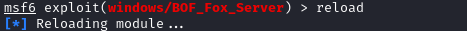

where put the module
Where put the moduleIn Kali Linux, we have two options:
• In the framework file system:
◇ /usr/share/metasploit-framework/modules/exploits/windows
• In the directory reserved to the private user modules and plugins:
◇ ~/.msf4/modules/exploits/windows/
cd ~/.msf4/modules/
mkdir exploits
cd exploits
mkdir windows
cd windows
better choice
because avoids any problems related to the framework updates and upgrades (for example the overwrite of your custom or modified modules) . As you can see, we have used it in our exploitation module
Reload the moduleWhile we are in metasploit if we have done some changes to the code and we want to reload it use the command reload
In this example we saved the module in the path “/root/.msf4/modules/exploits/windows/BOF_Fox_Server.rb”